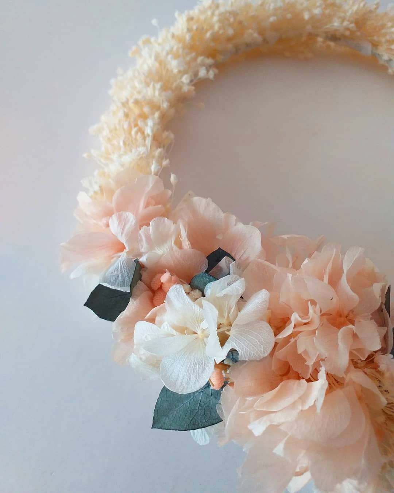

Flores como filosofía de vida
Me llamo Marina Martín y soy una apasionada de las flores, desde bien pequeñita. Estudié gestión forestal y luego paisajismo, desde siempre tuve claro que me quería dedicar a algo relacionado con la naturaleza. Mientras estudiaba gestión forestal me comencé a interesar por el mundo de la floristería y unos años más tarde nació Pétalos de Amapola. Fue entonces cuando decidí dar el paso y empezar a enseñar mis creaciones al mundo. Aquí encontraras un trocito de mi mundo y mi pasión. Empecé haciendo tocados y coronas con flores preservadas, pero enseguida me puse manos a la obra haciendo ramos de novia, prendidos para el novio y todos los complementos necesarios para hacer una boda inolvidable y llena de flores y naturaleza. ¡Sigamos brotando y poniendo color a la vida juntas!
